Assetliste
UI-elementer
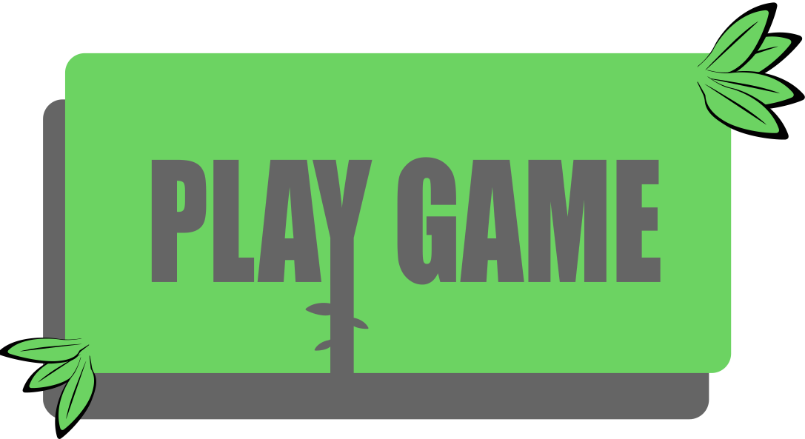
fig. 1 - Start knap
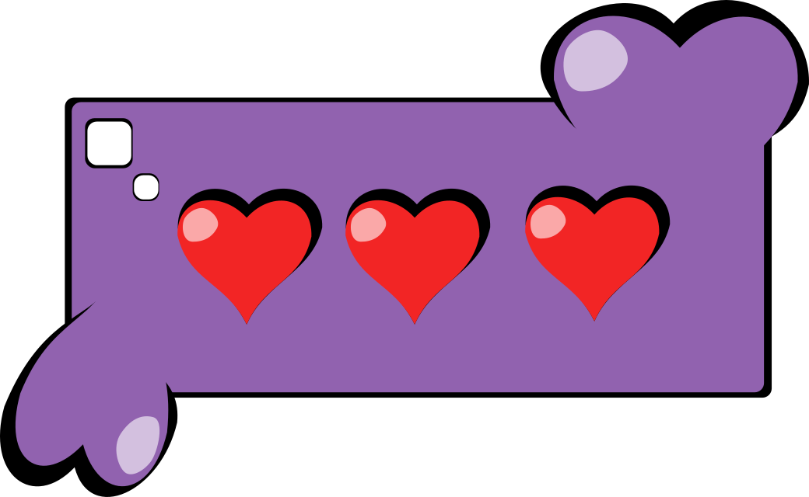
fig. 2 - Hjerte
fig. 3 - Fuld liv
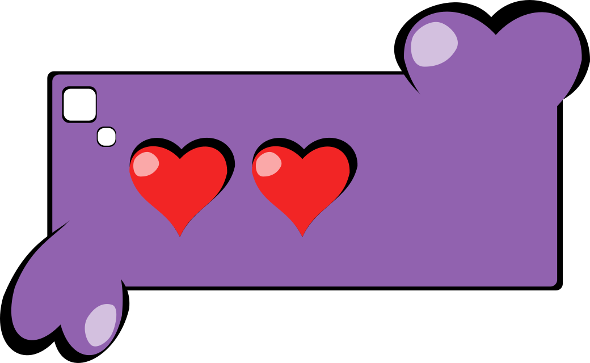
fig. 4 - Et liv mistet
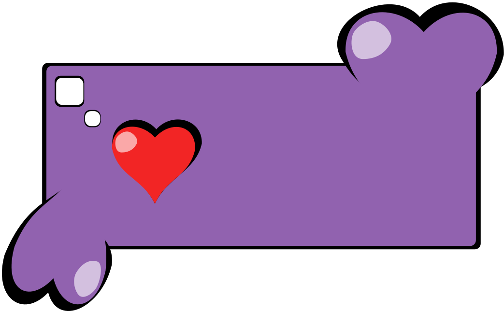
fig. 5 - To liv mistet
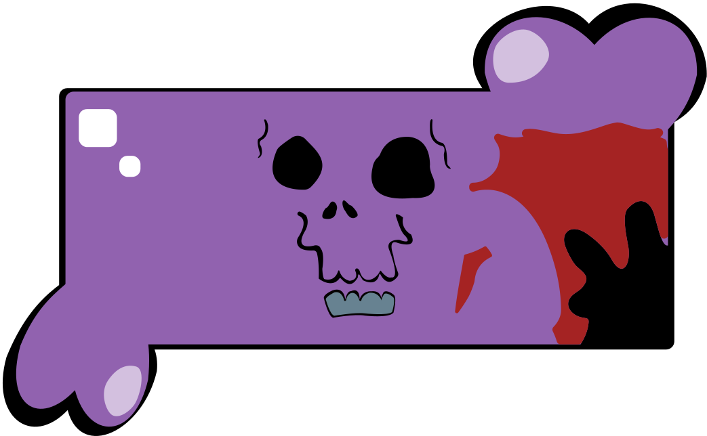
fig. 6 - Nul liv tilbage
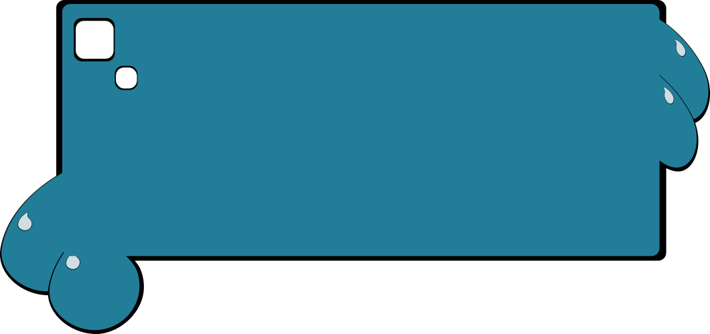
fig. 7 - Point måler
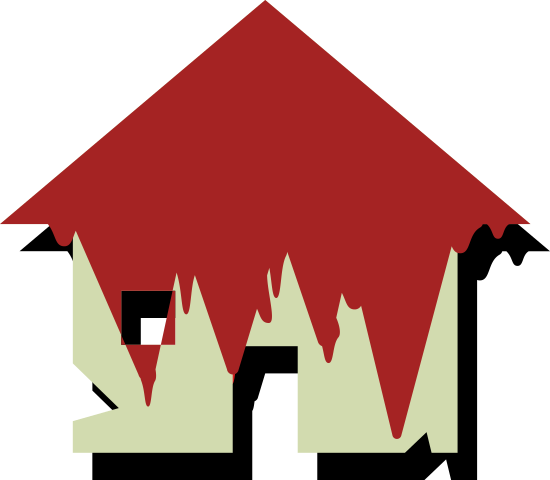
fig. 8 - Hjem knap hvis spil tabt
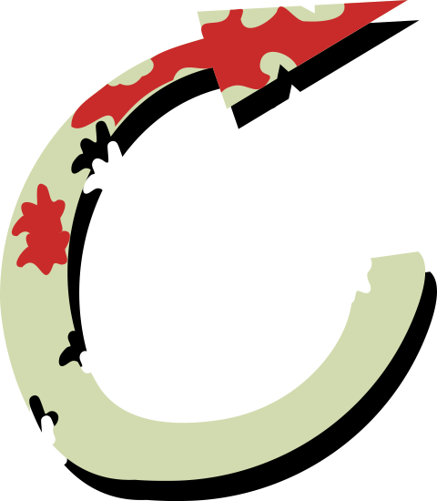
fig. 9 - Forfra knap hvis spil tabt
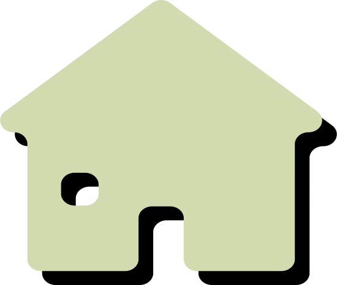
fig. 10 - Hjemknap hvis spil vundet - bløde kanter
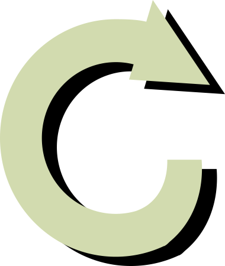
fig. 11 - Forfra knap hvis spil vundet
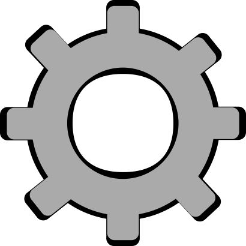
fig. 12 - Options knap
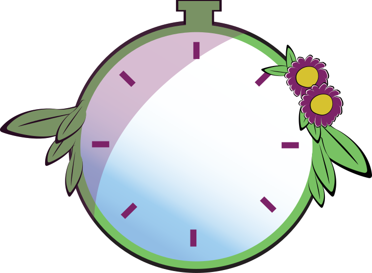
fig. 13 - Ur
Projektiler
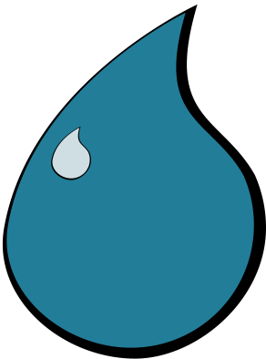
fig. 1 - Vandprojektil - et point
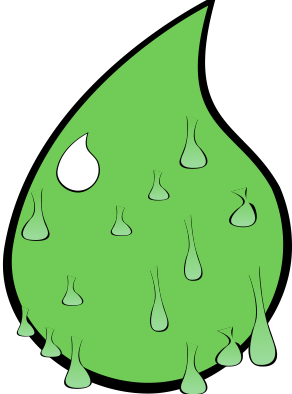
fig. 2 - Syreprojektil - Mister et liv
fig. 3 - Ildprojektil - mister et point
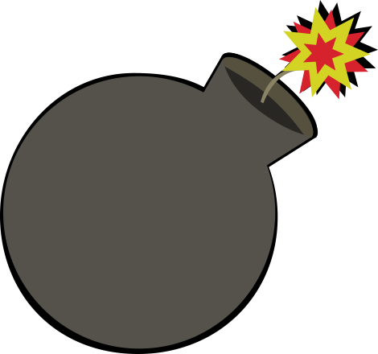
fig. 4 - bombeprojektil - mister alle liv
Baggrunde og skærme
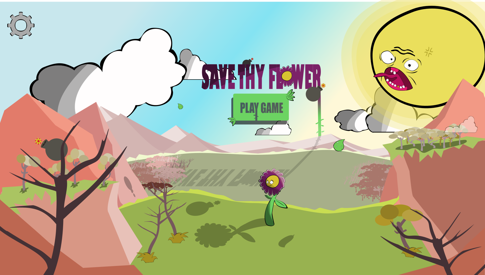
fig. 1 - Startskærm med UI
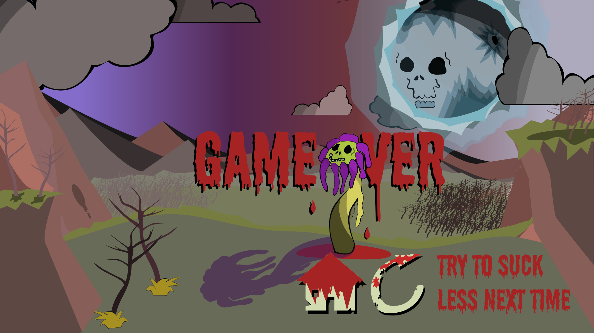
fig. 2 - Game Over skærm med UI
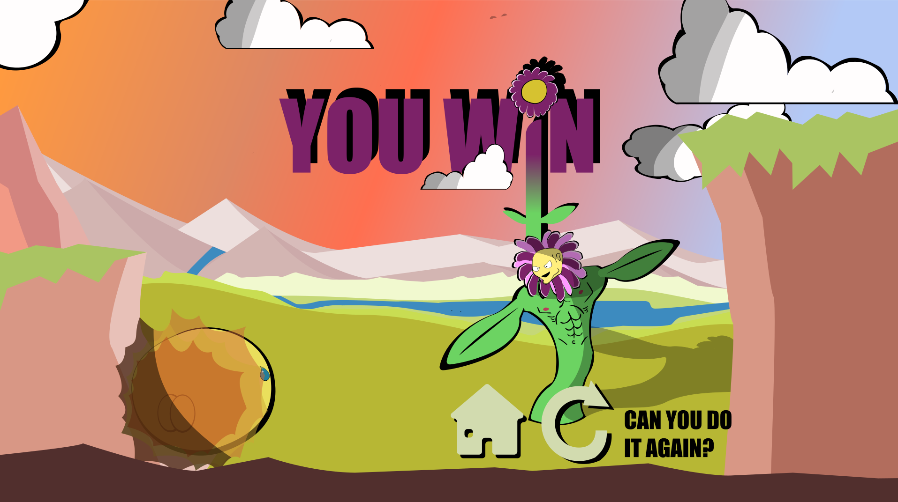
fig. 3 - Vinder skærm med UI
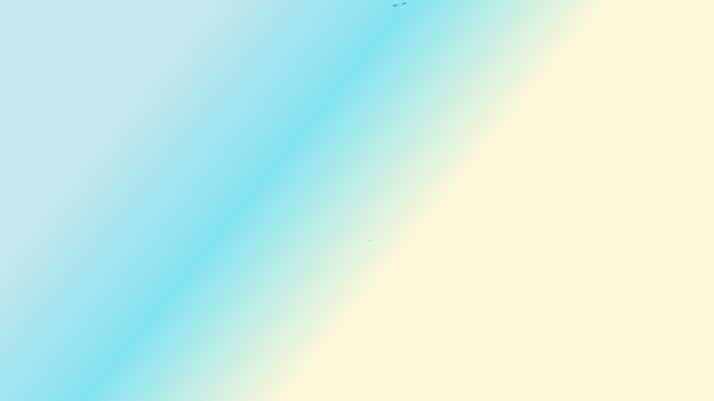
fig. 4 - Himmel
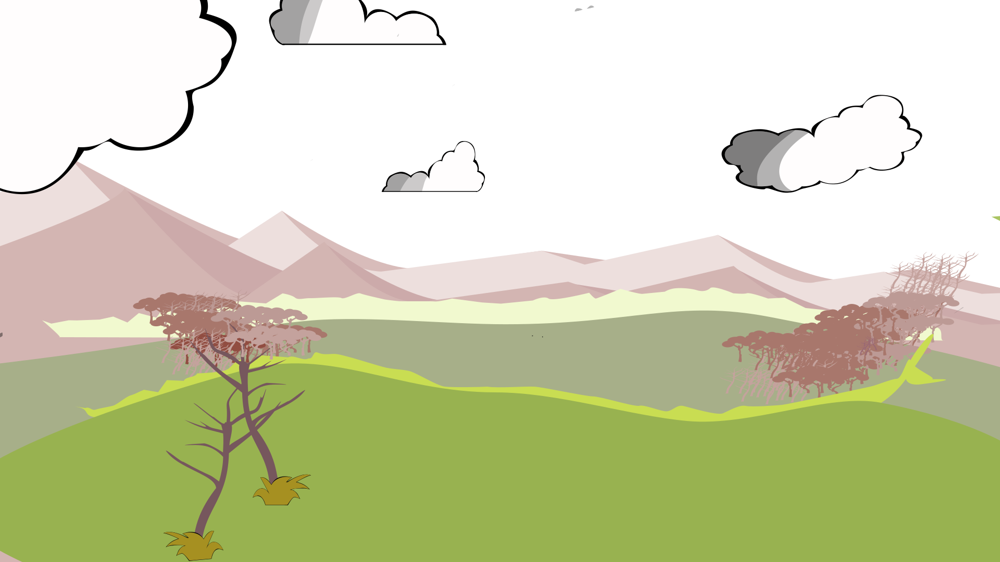
fig. 5 - Mellemgrund
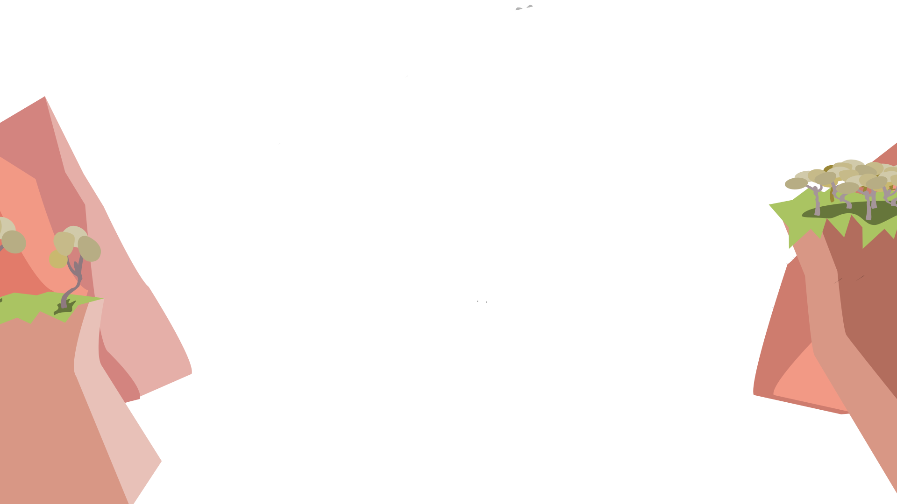
fig. 6 - Forgrund
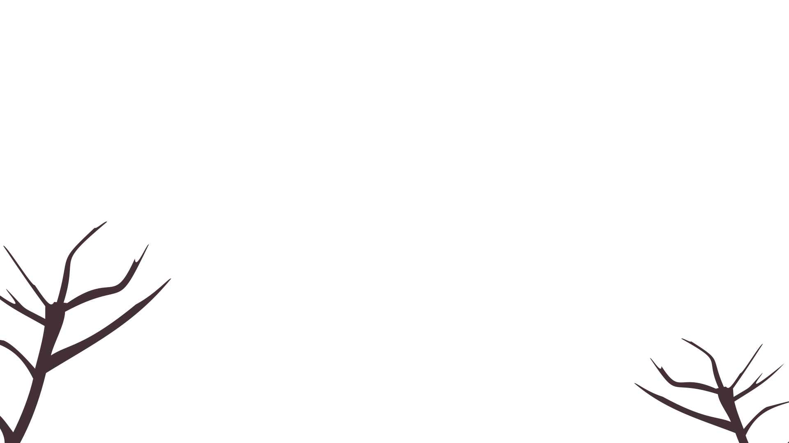
fig. 7 - Forgrund 2